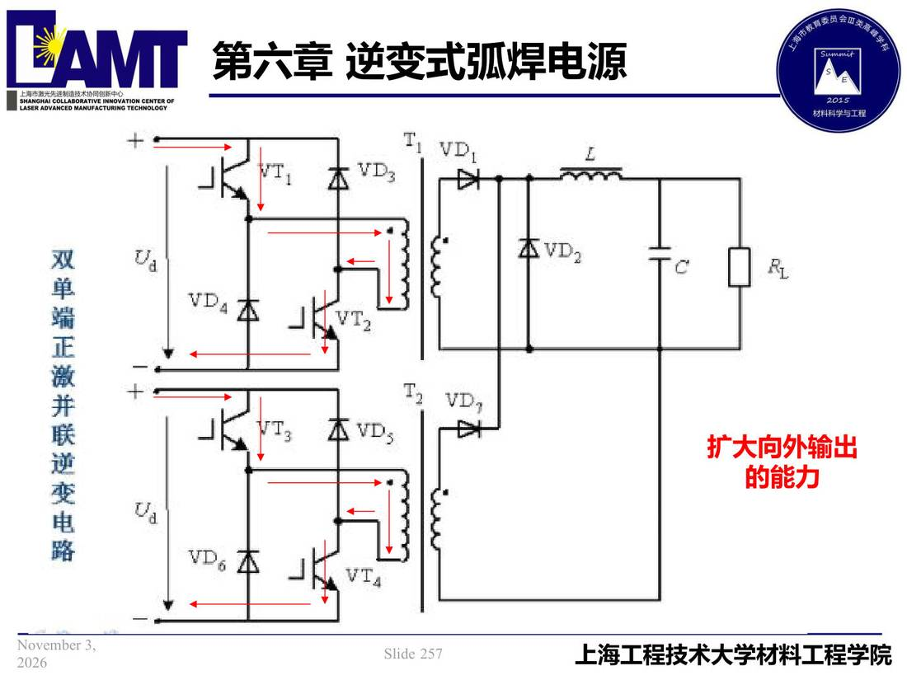

06 第6章 逆变式弧焊电源/p257 扩大向外输出p257 扩大向外输出弧焊电源章/06类型/正文第 6 章幻灯片 257/2736.2 逆变电路 📄 原文：📄 弧焊电源 课件（PDF 第 257 页）（幻灯片 257/273；PDF 第 257 页） 扩大向外输出  讲义原文 的能力 本页标红（老师强调） 扩大向外输出 页面文字（OCR 机读，可能有错字，以页图为准） 扩大向外输出 的能力 关联 ← p256 · 本章索引 · p258 → 同组：6.2 逆变电路 · 全章：逆变式